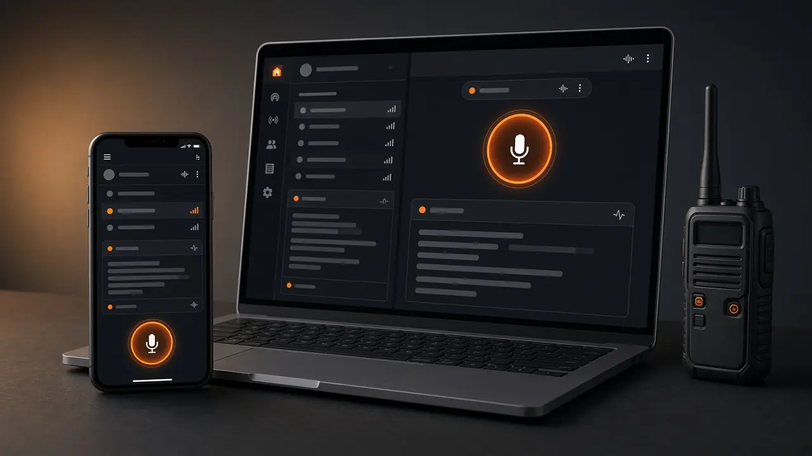

PTT 2
Channel picker, relay sign-in, free Virtual auto-join, transcription settings, GPS share, and device linking.
Open PTT 2Applications
Phone, laptop, and a handheld on the same idea: hold to talk. Each app below is a real page on this site.

Channel picker, relay sign-in, free Virtual auto-join, transcription settings, GPS share, and device linking.
Open PTT 2Free channels. Share one link. Both sides hold PTT. No email form on a free join.
Open radiosSearch internet stations and preview a stream. Saving an assignment does not yet broadcast it into PTT.
Open Smart RadioBrowser push-to-talk with presence, floor control, and communication history. Production channels need a sign-in.
Open PTTLive speech-to-text. The client already watches for words such as mayday, sos, and emergency.
Open TranscribePublic-address control room. ₹35,000 one-time. Four AUX outputs. Preview values are illustrative.
Open the control roomTalkgroup shortcuts that open Hose. Receive-only directory, not a licence.
Open DMRLTE-style radio and transcription handset hosted on this site.
Open BoondockThe development PTT with the station scanner. Not the old Pages copy.
Open devSDR-based surveillance for authorised military and defence use.
Request a meetingA learning agent that compares a local model with a leading model.
Ask for priceDirectory of channels, apps, and source repositories.
Open the hub